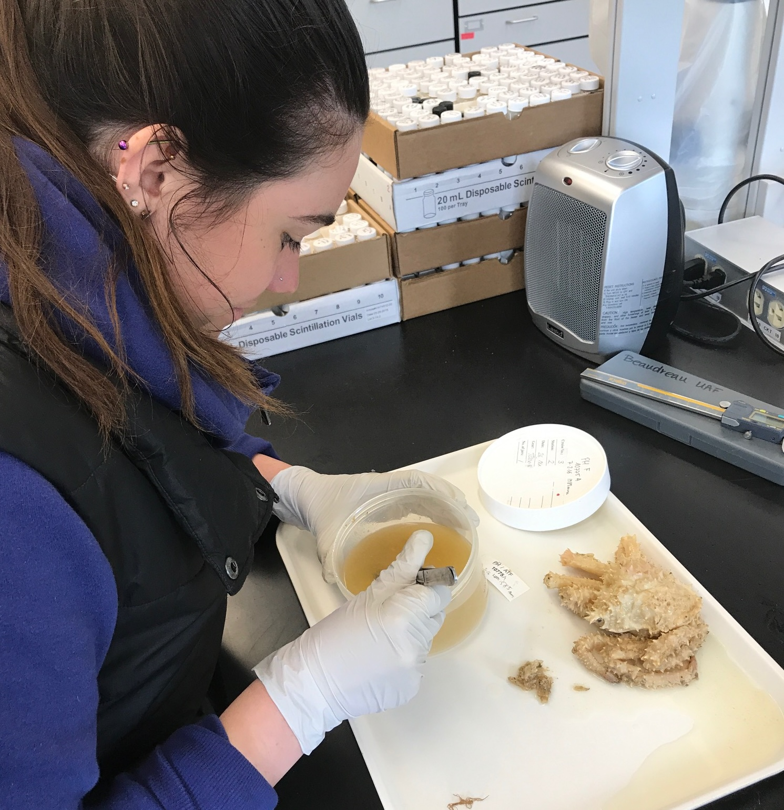

PC: M. Kosma
The main objective of the Integrated Marine Fisheries Lab is to conduct science that informs marine resource management. Much of our work focuses on better understanding population and community dynamics of groundfishes in the North Pacific. We value collaboration among academic and agency scientists, resource managers, and fishery stakeholders because of its benefit to both process and product.

Some common research themes include:
— evaluating effects of scale on ecological inferences,
— enhancing scientific lessons through cross-regional comparisons, and
— using multiple metrics to improve our understanding about processes of interest.
We rely on field sampling, lab-based research, and statistical modeling to inform data-poor stock assessments and support ecosystem-based fisheries management.
Coastal Oregon Marine Experiment Station
Department of Fisheries, Wildlife, and Conservation Sciences
Oregon State University
Marine Resources Program , Oregon Dept. Fish and Wildlife
Please click here for a Diversity, Equity, and Inclusion Statement and here for a Code of Conduct that I helped create through different collaborative processes. I emphasize the ideas, values, and strategies identified therein in all aspects of my work.